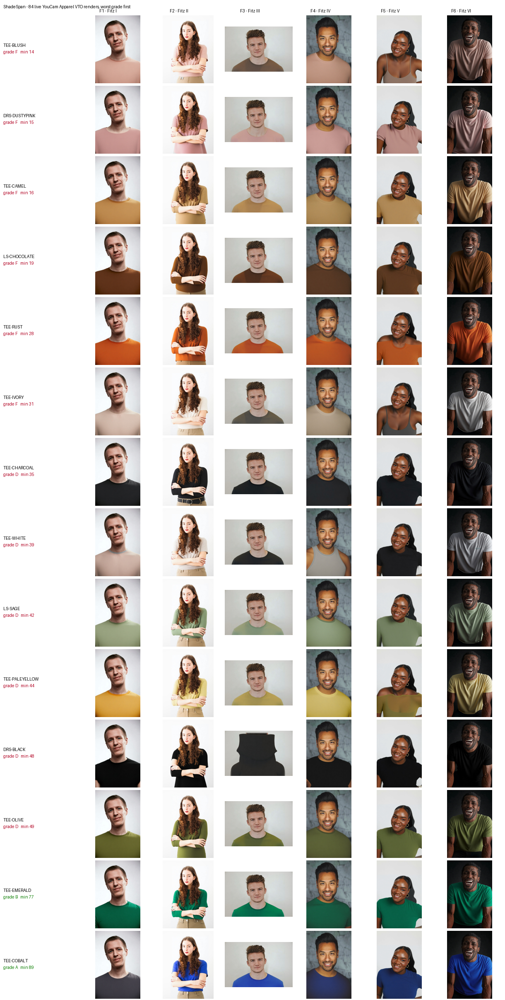

ShadeSpan renders every garment in a catalog on every skin tone using YouCam Apparel VTO, scores how each colour actually reads against each tone, and flags the ones that vanish — before the season ships.
Most online shops photograph each garment on one model. Everyone whose skin is a different shade is guessing.
Sometimes the guess is wrong in an expensive way. A beige tee that blends into fair skin. A pale yellow that looks washed-out on deep skin. A camel jumper that turns nearly invisible on the exact skin tone it happens to match. The shopper either never clicks, or clicks and sends it back.
Brands rarely find out which garments do this. Photographing 14 garments on 6 models is 84 separate shots and a week of studio time, so nobody checks. The problem only shows up months later, buried in returns data.
A tool that does those 84 shots in about two minutes, then marks them.
Every garment is tried on every member of a six-person panel spanning the full Fitzpatrick I–VI range, using YouCam Apparel VTO.
Each combination is scored on how clearly the garment separates from the skin — using published colour science, not opinion.
Each garment is graded on its worst skin tone, never its average, then written up in a report a merchandiser can act on.

| Garment | Grade | Worst score | Fails hardest on |
|---|---|---|---|
| Blush Crew Tee | F | 13.7 | Fitzpatrick II, I |
| Dusty Pink Shift Dress | F | 14.6 | Fitzpatrick I, II |
| Camel Crew Tee | F | 15.7 | Fitzpatrick IV, III |
| Chocolate Long Sleeve | F | 18.9 | Fitzpatrick VI, V |
| Rust Crew Tee | F | 27.8 | Fitzpatrick V, IV |
| Ivory Crew Tee | F | 31.4 | Fitzpatrick II, I |
| Emerald Crew Tee | B | 76.8 | Fitzpatrick VI, I |
| Cobalt Crew Tee | A | 88.8 | Fitzpatrick VI, I |
The pattern is not random. Pinks and ivories collapse on the fairest tones. Chocolate and rust collapse on the deepest. Camel fails in the middle of the range. Cobalt and emerald clear everyone.
That matters because the colour maths and the renders were produced independently — one is physics, the other is a generative model. They agree.
Every garment-and-tone pair gets a score out of 100, built from three measurements plus one veto:
How strongly the garment's edge reads against skin, by brightness contrast (the WCAG standard) or by colour contrast — whichever is stronger, because human vision uses either.
How far apart the two colours are perceptually, using CIEDE2000 — the industry standard for "can a person tell these apart".
Saturated colours survive a small brightness gap better than muted ones, so they earn a little back.
If a garment sits too close to skin in brightness, saturation and hue, the cell is capped at a fail regardless of the rest. That failure is categorical, not marginal.
Each garment is then graded on its worst tone. An average would hide precisely the customer this tool exists to protect.
Merchandisers see which colours fail, and on whom, while there's still time to drop or recolour them.
The report names the exact garment-and-tone pairs that need a second model — instead of shooting everything on everybody.
Product pages stop over-promising on colours that vanish against the buyer's skin. Colour dissatisfaction is a large slice of apparel returns.
Auditing a 14-garment capsule costs about 168 API units — roughly one shopper session — and informs the whole season.
| Feature | Endpoint | Used for |
|---|---|---|
| Apparel VTO | POST /s2s/v2.0/task/cloth | all 84 renders in the matrix |
| Skin AI | POST /s2s/v2.0/task/skin-analysis | per-model skin condition scores |
Runs are cached and content-addressed, so re-running after a crash or a threshold change costs nothing. A ledger projects spend before every call and stops cleanly at its cap, and the real remaining balance is read from the account rather than assumed.
The report also checks its own evidence. A try-on can quietly return the model's original clothing, which would leave the report claiming a garment fails next to a photograph showing something else entirely. ShadeSpan measures the colour each render actually produced and flags the ones that drifted — 13 of 84 on this run. It's a heuristic, so it's reported as a warning and never changes the grade.